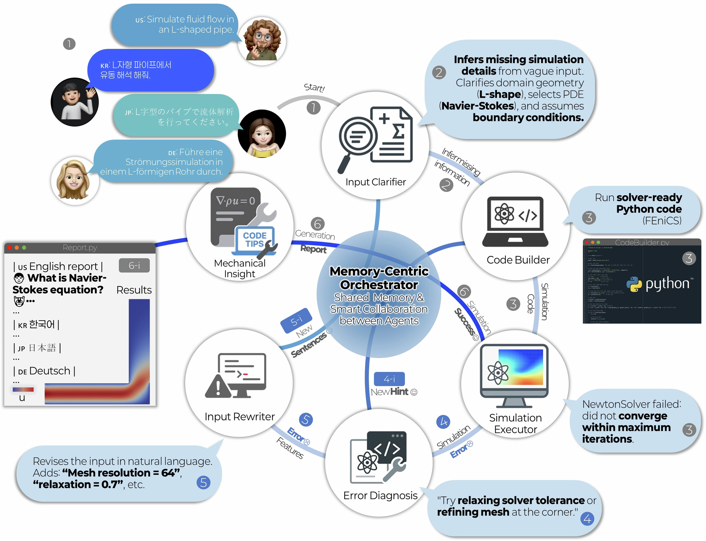
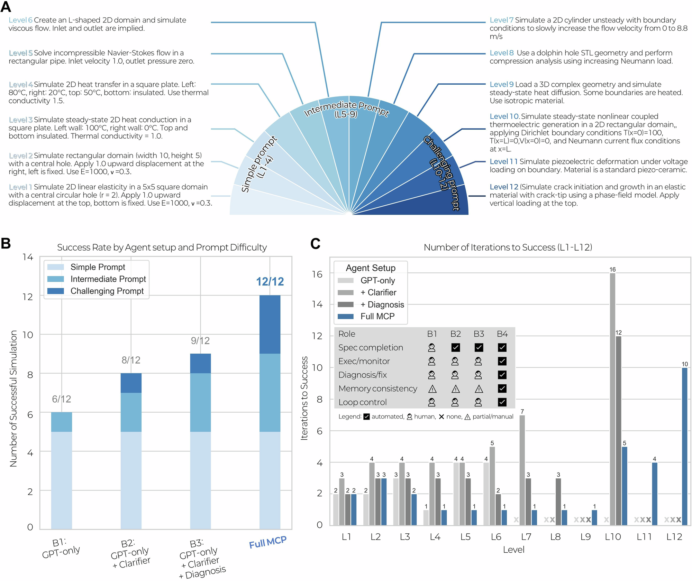
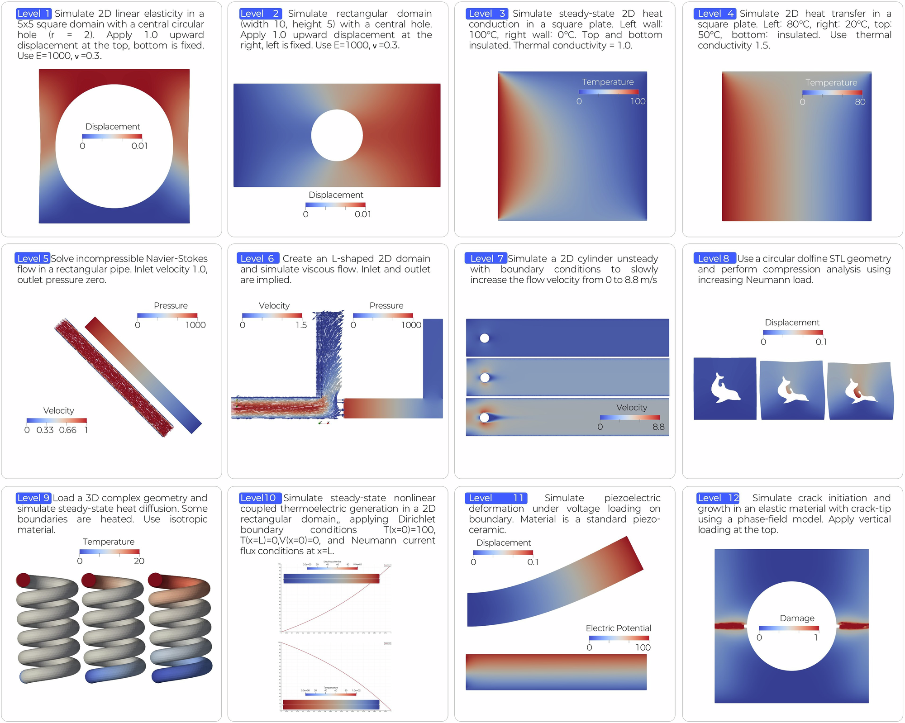
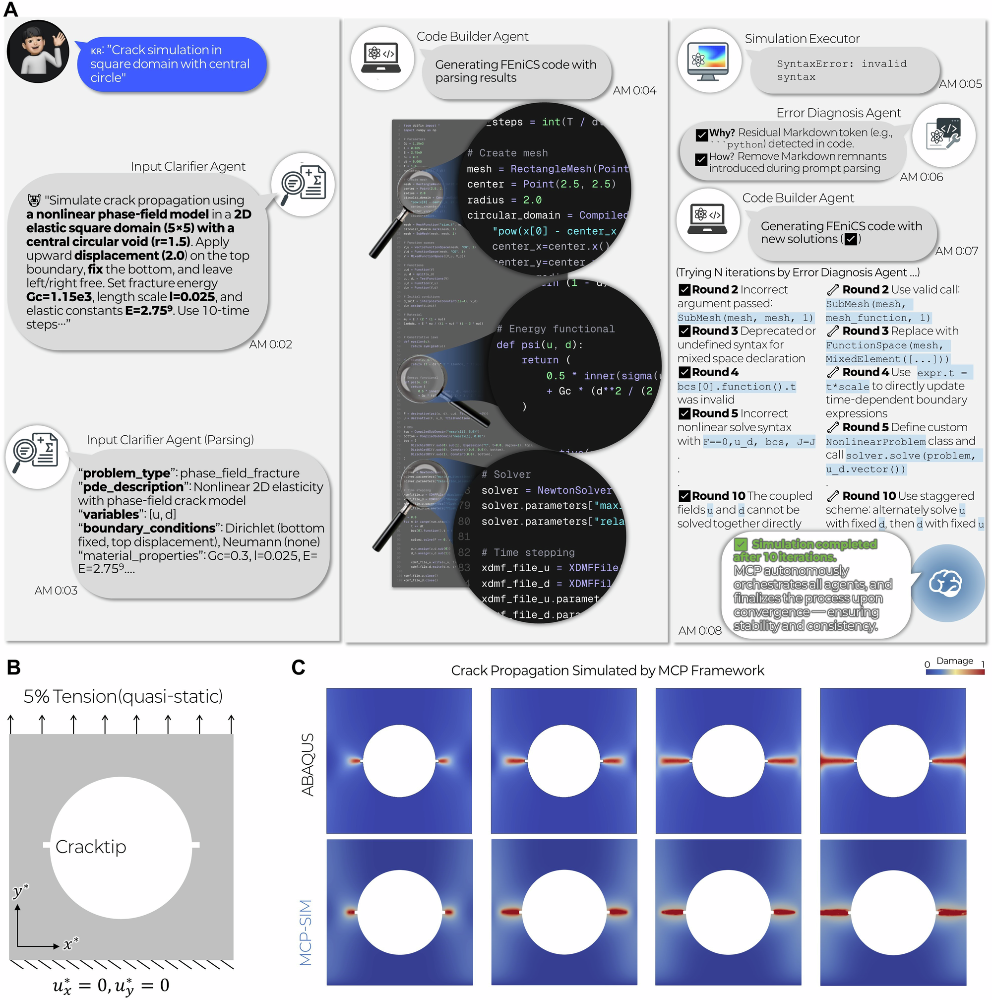
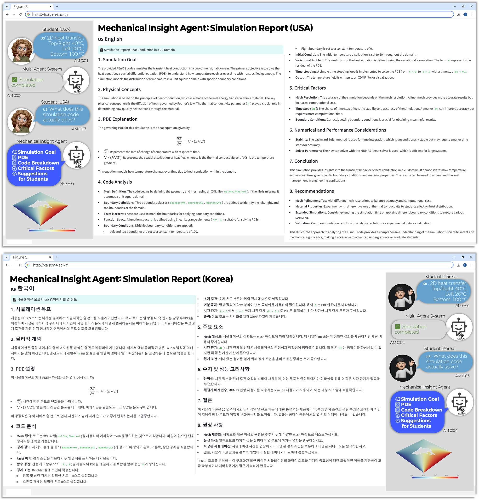

论文资料
A self-correcting multi-agent LLM framework for language-based physics simulation and explanation
尚未取得可核实的完整摘要或全文
尚未取得可核实的完整摘要或全文。取得完整资料并通过核验后，这个地址会更新为图文解读。
原图未改动。以下图注来自标注的来源，不据此补写摘要未报告的实验结论。
已取得的论文原图


原文图注与出处
The system starts with a user’s natural language prompt (①), which is clarified by the Input Clarifier Agent (②) to identify missing details (geometry, PDE type, boundary conditions). The Input Clarifier turns the user prompt into a canonical paragraph and a structured JSON for code generation (parsing module within the Clarifier) . The Code Builder Agent (③) then generates solver-ready Python code, which is executed by the Simulation Executor Agent (④) while monitoring for errors or physical anomalies. If an error occurs, the Error Diagnosis Agent (⑤) identifies and corrects it; if the initial instructions are ambiguous, the Input Rewriter Agent (⑤-i) refines the prompt and the cycle repeats. Finally, the Mechanical Insight Agent (⑥) produces a multilingual report explaining the simulation’s physical principles and results, demonstrating how MCP-SIM yields accurate, executable, and educational outputs through coordinated agent interaction.
Park, Donggeun et al.
原文图页 · CC BY-NC-ND 4.0

原文图注与出处
A Twelve benchmark tasks categorized by increasing difficulty—from well-posed, single-physics problems (Levels 1–4) to under-specified, multi-physics challenges (Levels 10–12). B Success rates across three benchmarks and MCP-SIM: B1. One-shot GPT, B2. GPT + Automated Clarifier, B3. GPT + Clarifier + Human Diagnosis (human-in-the-loop hybrid), and MCP-SIM. C Number of Plan–Act–Reflect–Revise cycles required for successful outcomes. MCP-SIM consistently solves all tasks within five iterations, significantly outperforming baseline models. The inset table in ( C ) summarises the automation scope of each benchmark, showing which stages (specification completion, execution/monitoring, diagnosis/fix, memory consistency, loop control) are automated ( ), human-mediated ( ), or partially manual ( ). MCP-SIM uniquely integrates all stages into a fully automated, memory-centric loop.
Park, Donggeun et al.
原文图页 · CC BY-NC-ND 4.0

原文图注与出处
(Top-left to bottom-right): This presents the final simulation outputs from MCP-SIM for each of the 12 levels of complexity, ranging from basic linear elasticity (Level 1) to advanced multi-physics problems, such as phase-field crack growth (Level 12).
Park, Donggeun et al.
原文图页 · CC BY-NC-ND 4.0

原文图注与出处
A Agent reasoning process for Level 12: From a single-sentence prompt, MCP-SIM infers geometry, governing equations, and solver setup through iterative agent collaboration. B Problem setup: a square domain with a central circular crack tip subjected to 5% upward displacement on the top boundary; bottom boundary is fixed, representing a quasi-static tension condition. C Comparison of crack propagation results obtained using ABAQUS (top row) and the MCP-SIM framework (bottom row). Both methods predict symmetric crack growth from the circular notch, validating the correctness and robustness of the autonomous simulation workflow.
Park, Donggeun et al.
原文图页 · CC BY-NC-ND 4.0已取得的论文原图


原文图注与出处
This showcases simulation reports generated by the Mechanical Insight Agent in English (USA) and Korean. The reports provide comprehensive, student-friendly explanations of the simulation, including details on the simulation goal, physical concepts, PDE explanations, and critical factors. The multilingual capability ensures that students from different backgrounds can easily understand the process and results of their simulations.
Park, Donggeun et al.
原文图页 · CC BY-NC-ND 4.0